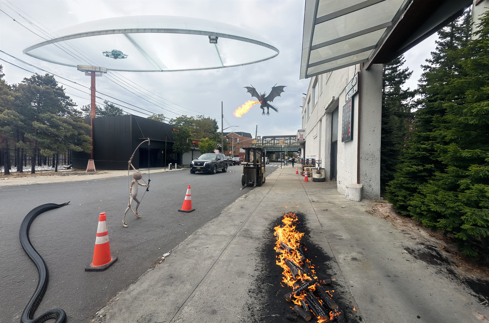
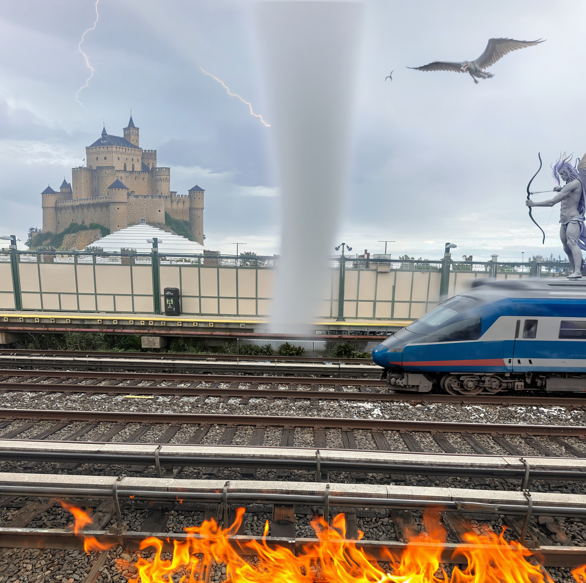
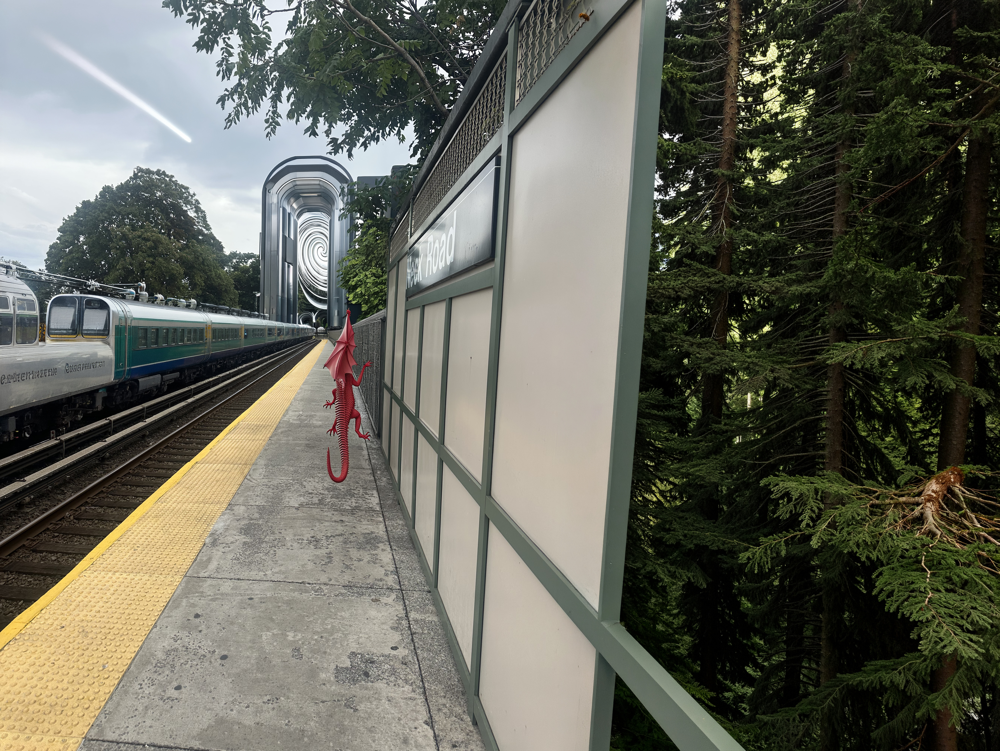
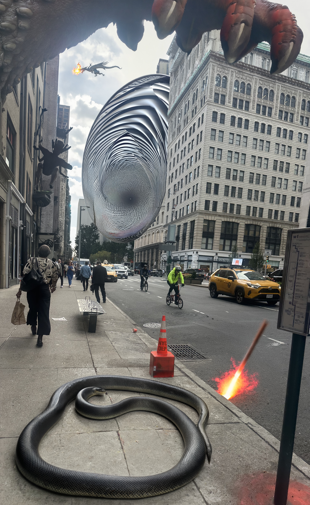

In a vivid dystopian realm, daily travel has transformed into a surreal passage through crumbling megacities, enchanted ruins, supernatural landscapes, and mysterious creatures. Inspired by a high-stakes fantasy survival world, each scene captures a different stage of an extraordinary commute where mystical beings and otherworldly forces shape every journey.
Image Journey


